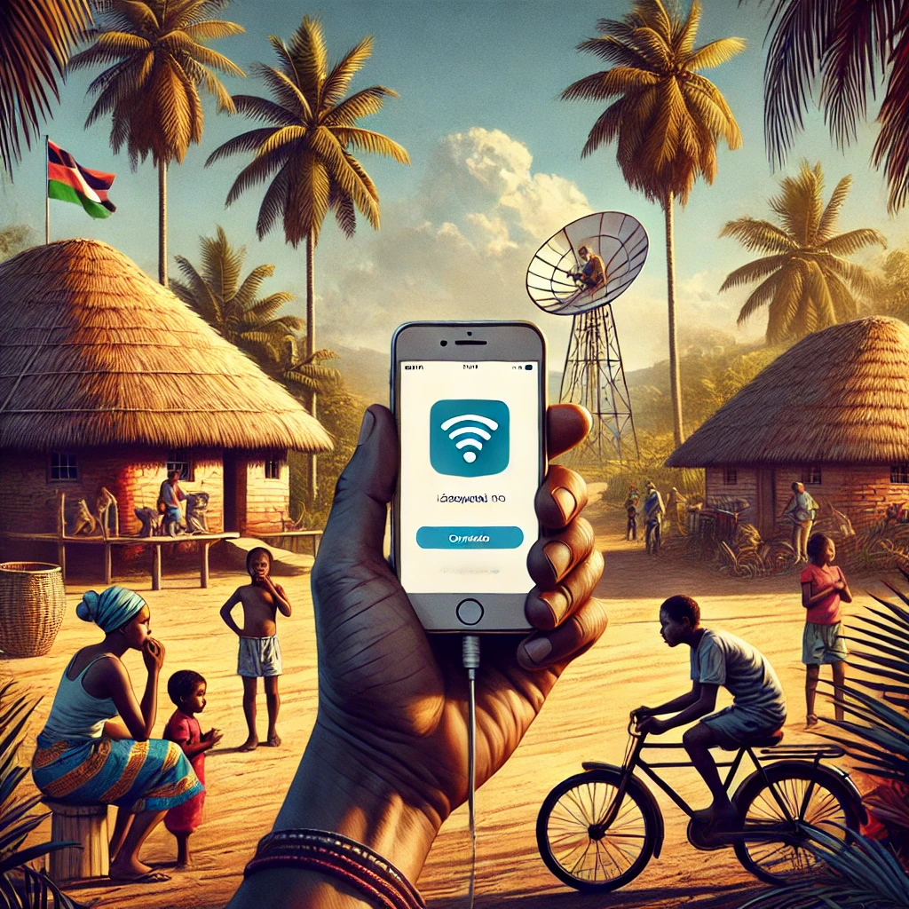

Mesmo com o bloqueio do WhatsApp, Facebook e YouTube em Moçambique, você pode acessar a internet rapidamente usando o VPN Proxy Master no Android ou o Psiphon Pro no iOS.
VPN Proxy Master:

- ✅Acesse a Google Play Store.
- ✅Procure por "VPN Proxy Master".
- ✅Baixe e instale o aplicativo.
- ✅Abra o aplicativo e siga as instruções na tela para conectar-se.
Psiphon Pro:

- ✅Acesse a App Store ou Google Play Store.
- ✅Procure por "Psiphon Pro".
- ✅Baixe e instale o aplicativo.
- ✅Abra o aplicativo e clique em "Conectar" para começar.
Benefícios de participar da Open Mind:
- ✅ Acesso a uma comunidade colaborativa.
- ✅ Conteúdos sempre atualizados.
- ✅ Oportunidades de networking.
- ✅ Suporte contínuo de especialistas.